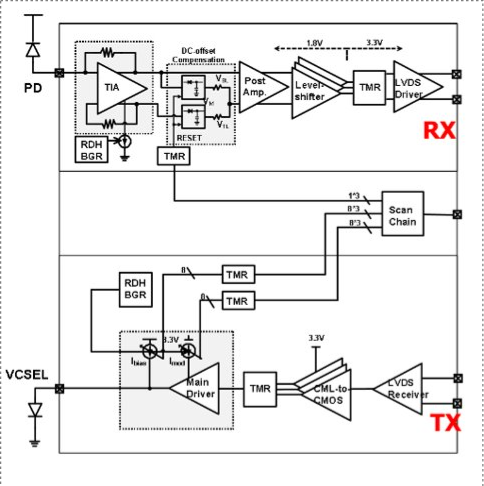
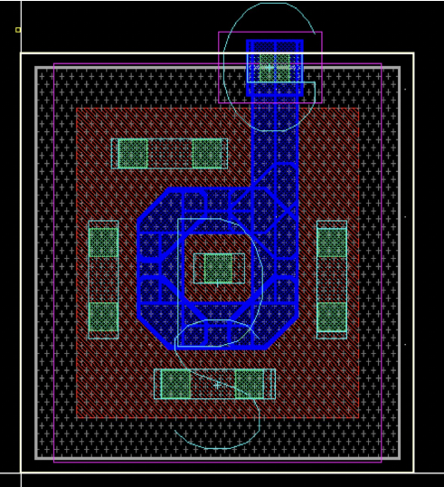

This project is my undergraduate thesis and involves the design and testing of a radiation-hardened transceiver fabricated in a 180nm CMOS process. The first generation device is targeting a data rate of 500 Mbps and the second generation is targeting a data rate of 6.25 Gbps. I have been specifically assisting with the electrical and radiation measurements and will contribute to the design and layout of the second generation device as I work on my thesis.
Reliable and efficient communication links are vital in harsh environments where ionizing radiation is present. Optical links specifically are necessary to support the growing need for higher data rates and faster signal processing requirements of devices in these environments. For many years, radiation hardness in electronics has been achieved via specialized manufacturing processes by dedicated foundries. These techniques have failed to scale at the rate of commercial CMOS processes, disallowing for faster and more efficient circuits. One strategy to create radiation tolerant circuits while still using commercial fabrication is to use a hard-by-design methodology. This research seeks to utilize this approach to design an optical transceiver based on a transmit vertical-cavity surface emitting laser (VCSEL) and a receive photo-detector (PD) with a radiation hardened transceiver circuit.
The device can overall be divided into three parts: the transmit circuitry, the receive circuitry, and the scan chain. Each part will be discussed in detail below. A high level overview of the device is shown below.
On the transmit side, a LVDS buffer receives the incoming data and converts it to a current- mode logic (CML) signal. The output of the buffer is passed through a CML to CMOS converter including triple modular redundancy (TMR) for radiation hardness. From here, the output VCSEL is driven with a user controlled modulation and bias current. The driver currents are biased with a current-mode band gap reference for radiation hardness.
On the receive side, a DC-coupled photo-detector delivers the current mode signal to the device. A transimpedance amplifier (TIA) amplifies the signal and converts it to a voltage swing. The amplifier’s primary current source is biased with a current-mode band gap reference for radiation hardness. From here, the differential signal is passed through DC offset compensation circuitry and a post amplification stage. Next, a level shifter converts 1.8V signaling to 3.3V. The block includes TMR for radiation hardness. Finally, the shifted signal is converted and driven into a LVDS electrical output.
The scan chain includes control circuitry for selection of TX modulation current (8-bits), TX bias current (8-bits), and one reset bit. Each control line will include TMR for radiation hardness.
Various techniques will be used in the design and layout of the device to ensure it is hard to both SEEs and TID effects. The three primary hard-by-design practices that will be used are an enclosed layout technique, triple modular redundancy, and the use of a band gap reference.
An enclosed layout technique (shown below) is used to eliminate the source to drain leakage path caused by TID radiation. This design provides radiation hardness at the cost of increased area, increased device capacitance, and thus decreased speed.
Triple modular redundancy (TMR) involves creating three copies of a certain circuit, usually digital control or some module with latching elements, and performing a “vote” on the output to ensure the signals are identical and a single event upset (SEU) has not occurred. If the three outputs are not identical, the bit will be thrown out. The use of TMR is intended to counter SEUs on latching elements, that is, when a particle strikes a latch or flip-flop and causes the bit to reverse. Since the probability of three SEUs simultaneously is extremely unlikely, TMR is effective at eliminating these effects.
Finally, the use of a current-mode band gap reference will provide a bias point for the VCSEL driver and TIA. The circuit produces a stable current reference regardless of temperature and radiation dose.
Back to Projects Page